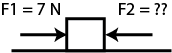

edX
WitsX Introduction to Physics
Problems: Friction
Problem 1
Consider the same block on the flat surface. We apply a force of 7N, F1, to the block. From the previous problem, we know that 7N is enough to overcome the static friction and get the block moving towards the right. We continue to apply this force, F1 = 7N, on the block to keep the block moving. How much force in the opposite direction, F2, is required to stop the block’s acceleration? As in the previous problem, coefficient of static friction is 0.34 and the coefficient of kinetic friction is 0.25.
